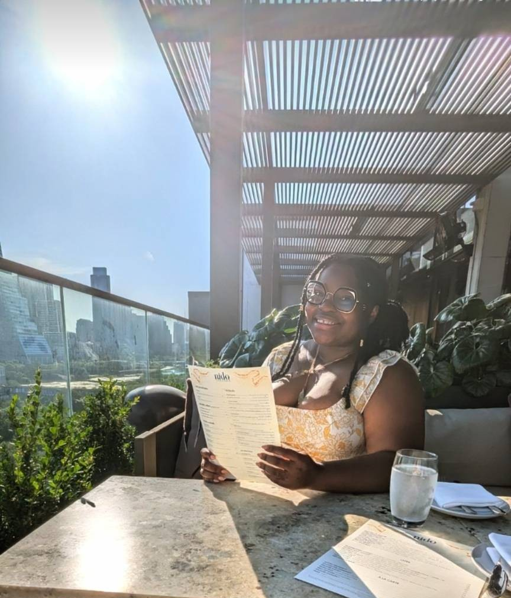

Im a multidisciplinary professional with a passion for storytelling, flavor, and figures. With a background that spans writing, food, and Finance, I blend creativity with precision to craft compelling content, engaging digital experiences, and organized financial records. Whether Im writing a recipe, capturing a moment with a camera, or balancing a ledger, I bring the same attention to detail, creativity, and commitment to quality.
Work closely with writers to flesh out their stories, scripts, and descriptions for an array of different media including instagram, quinn and independent publishing. Time-management and effective communication were key skills used throughout the project cycle. As well as the ability to follow strict guidelines under NDAs.
Created and managed a successful Austin food blog, writing engaging content, and producing high-quality photography to attract and retain a growing audience across multiple platforms. Conducted keyword research and implemented SEO strategies to increase website traffic; collaborated with brands for sponsored content, affiliate marketing, and social media promotions.
Facilitate the loan process as the middle man between loan officers and members. I was typically the first point of contact, collecting application documents and reviewing them for accuracy before preparing them to be passed onto the loan officer. This work included pulling credit scores, account information and other documents to support the loan officer in making the best decision.
Handle routine financial transactions for customers, including processing deposits, withdrawals and loan payments. Some other duties I dealt with from day to day are assisting customers with account inquiries, opening and closing accounts. As well as promoting bank products and services.
Intuit Academy bookkeeping professional certification